Reach Zora's Domain (Đến Zora's Domain)
Xong Eldin thì tiến sang Lanayru — vùng đất mát mẻ với sông, hồ và thác nước ở khắp nơi. Mục tiêu chính là tới Zora's Domain. Sau cái nóng của Eldin thì đây đúng là chỗ để thư giãn. Trước khi đi, hãy bổ sung món ăn ở Lookout Landing; Lanayru không có hiểm họa thời tiết nhưng có nhiều đoạn nhảy nền và leo trèo.
Xem ảnh (1)
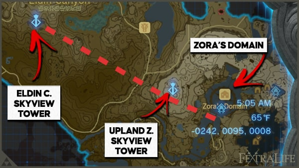
Activate The Upland Zorana Skyview Tower (Kích hoạt Tháp Quan Sát Upland Zorana)
Xem ảnh (1)
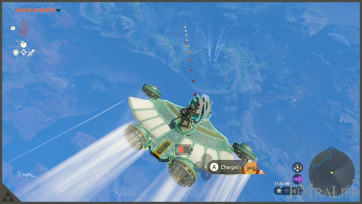
Dịch chuyển tới Tháp Quan Sát Eldin Canyon, phóng lên trời rồi lao về phía điểm đánh dấu nhiệm vụ ở hướng Đông. Đà lao đó đưa bạn tới tháp tiếp theo — nhìn là thấy ngay vì nó không xa. Mình thử dùng máy bay gắn Cần Lái cho vui, nhưng không cần thiết: từ tháp cũ bay thẳng tới cũng được.
Xem ảnh (3)
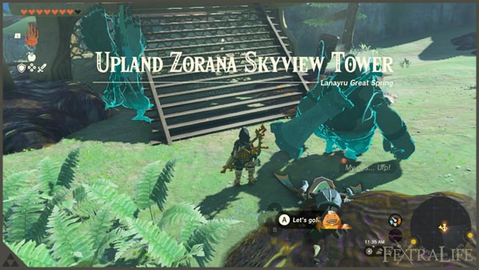
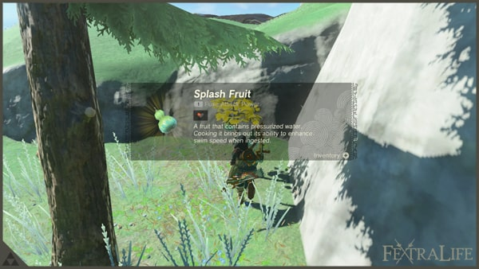
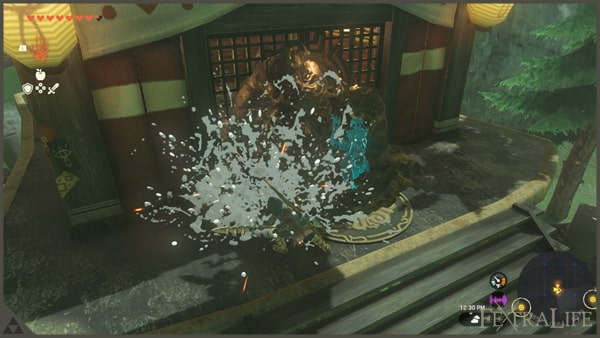
Tới tháp, bạn thấy bùn phủ kín lối vào. Quanh tháp có sẵn Quả Sóng Nước (Splash Fruit); nhặt lấy, cầm rồi thả và làm vỡ ít nhất 1 quả ngay chỗ bùn trước cửa tháp là nó sạch tức thì. Nhớ giữ lại vài quả vì lát nữa có nhiệm vụ cần. Kích hoạt Tháp Quan Sát Upland Zorana rồi lao xuống Zora's Domain — thành phố chính của vùng này. Trước tiên hãy tới Đền Thờ Nhỏ gần nhất để mở điểm dịch chuyển; từ trên cao bạn nhận ra nó nhờ quầng sáng xanh.
Xem ảnh (1)
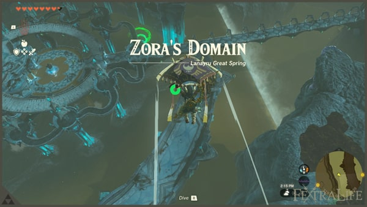
Clear Mogawak Shrine (Hoàn thành Đền Thờ Nhỏ Mogawak)
Đền này toàn câu đố về nước — đương nhiên rồi. Bạn sẽ dùng nước rất nhiều, và nên để ý cách các câu đố vận hành vì phần lớn ý tưởng sẽ xuất hiện lại ở Đền Thờ Nước.
Xem ảnh (1)
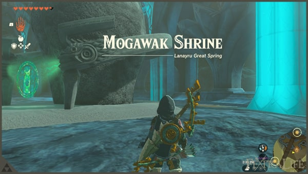
Thử thách 1: để ý nguồn nước chảy ra từ một bệ đá; việc cần làm là gắn tấm bia đá nằm quanh đó song song với tấm đã có, tạo thành chiếc cối xay nước nhỏ để cấp nguồn cho bệ bên cạnh. Dùng Siêu Tay hướng cối xay vào dòng nước cho nó quay. Xong thì lấy ống trụ rỗng đặt lên bệ đã có điện để nạp đầy năng lượng.
Xem ảnh (2)
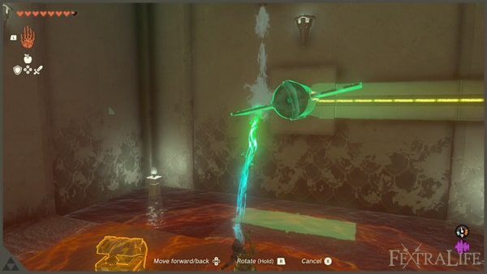
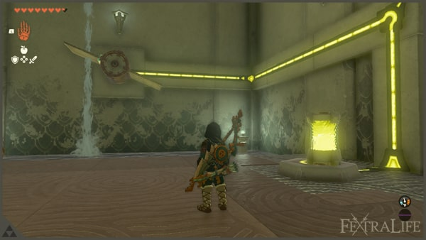
Thử thách 2: mang ống trụ đã nạp sang phía bên kia, nơi có khu bị khóa với chiếc rương bên trong. Đặt ống trụ vào nguồn điện. Để ý quả cầu phóng điện ra xung quanh; dùng Siêu Tay xoay quả cầu sắt và luồng điện để điện truyền sang quả cầu kế bên. Cửa chớp mở, lấy 1 Opal trong rương. Nếu hết thời gian thì chỉ cần nạp lại ống trụ từ nguồn điện của cối xay nước.
Xem ảnh (2)
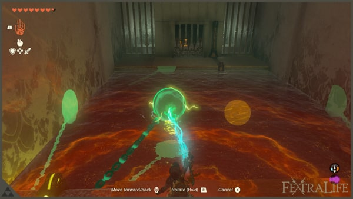
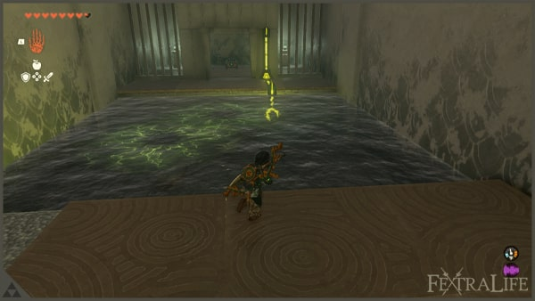
Mogawak Shrine Puzzle #3 (Đền Thờ Nhỏ Mogawak – thử thách 3)
Thử thách 3: nạp lại ống trụ rồi mang tới thang máy chạy bằng Quạt. Lên thang máy, đặt ống trụ vào nguồn điện để thang nâng bạn lên tầng trên. Nhận 1 Ánh Sáng Chúc Phúc.
Xem ảnh (1)
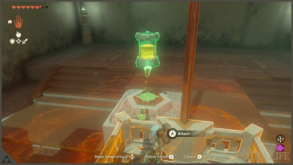
Clear the Sludge Cover Statue Quest (Rửa sạch bức tượng bị bùn)
Xong đền thì vào khu trung tâm thành phố, nói chuyện với Zora xanh lá — đó là Yona. Cô ấy cho biết bức tượng gần đó đang bị bùn bám và cần rửa sạch; nhiệm vụ chính The Sludge-Covered Statue bắt đầu. Nhớ mấy quả Sóng Nước đã giữ lại chứ? Giờ là lúc dùng. Mình thả và làm vỡ 3 quả ngay sát tượng là sạch. Nếu chưa đủ quả thì đi loanh quanh vùng này nhặt thêm, đây là loại quả mọc khá nhiều. Khi đã có 3 quả, ra tượng, lưu game trước khi thả cho chắc, và nhớ thả sát tượng. Rửa sạch tượng là xong nhiệm vụ.
Xem ảnh (3)
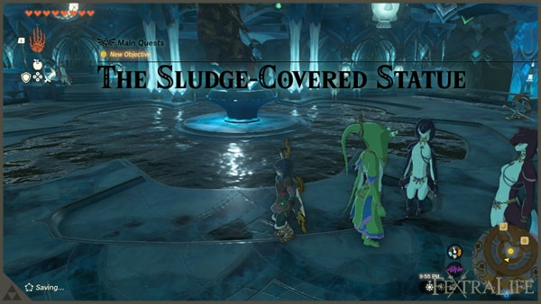
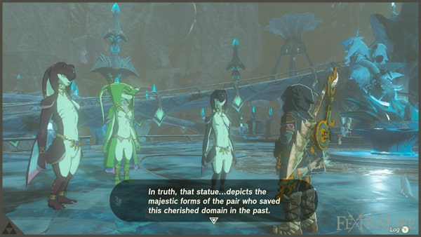
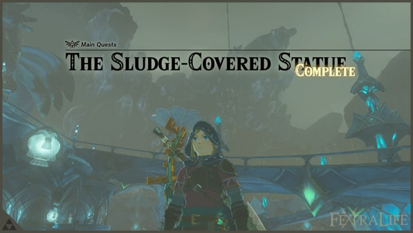
Find Sidon in Mipha Court (Tìm Sidon ở Mipha Court)
Xem ảnh (1)
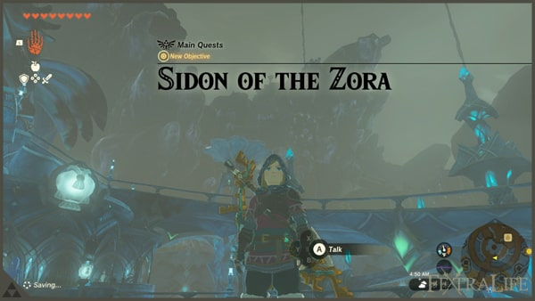
Xong nhiệm vụ tượng, Yona cảm ơn và nhờ bạn gặp lại Sidon ở Mipha Court — nằm trên một ngọn núi gần thành phố. Nhiệm vụ chính Sidon of the Zora cũng mở từ đây. Ngọn núi kéo dài trong ảnh chính là nơi cần đến.
Xem ảnh (1)
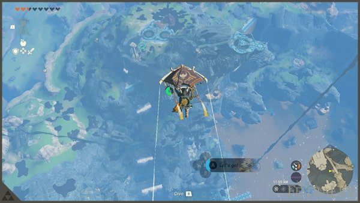
Cách nhanh nhất: dịch chuyển tới Tháp Quan Sát Upland Zorana rồi lượn tới ngọn núi đó — Ploymus Mountain. Sidon, hoàng tử Zora, đứng chờ ở các hồ nước trên ấy; nói chuyện để đẩy tiếp mạch nhiệm vụ. Anh ấy bảo bạn tìm Jiahto để hỏi thêm manh mối, vì Jiahto đang điều tra hiện tượng ở Toto Lake. Trước khi đi, làm luôn Đền Thờ Nhỏ gần đây.
Xem ảnh (1)
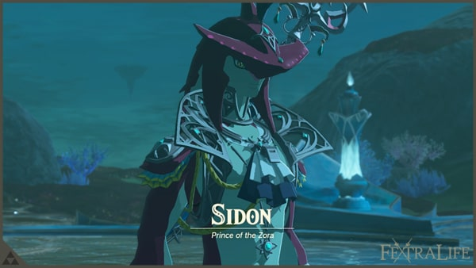
Clear Ihen-A Shrine (Hoàn thành Đền Thờ Nhỏ Ihen-A)
Ném 1 Quả Sóng Nước vào cửa đền để rửa bùn. Đền này xoay quanh Đá Bay (Hover Stone) — một Thiết Bị Zonai, kích hoạt là bay lơ lửng.
Xem ảnh (1)
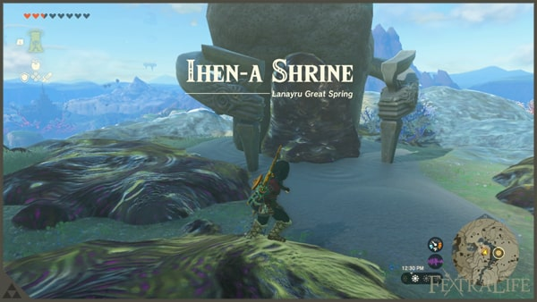
Thử thách 1: kích hoạt và sắp ít nhất 3 Đá Bay trong phòng để chúng thành bậc thang lên khu trên.
Xem ảnh (1)
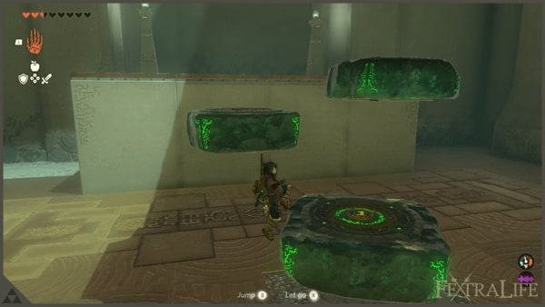
Thử thách 2: lấy một tấm bệ, kích hoạt cho nó bay giữa hố sụt rồi ghép cây cầu kim loại lên Đá Bay để đi qua. Qua bên kia, tháo cây cầu ra, xoay nghiêng khoảng 100 độ rồi gắn lại vào Đá Bay — nó thành chiếc thang để lên tầng cao hơn.
Xem ảnh (2)
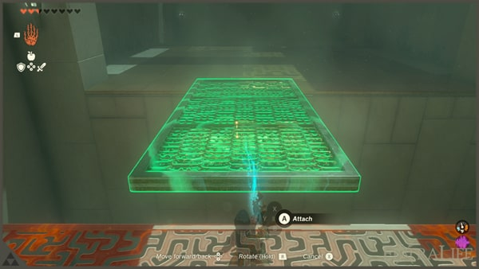
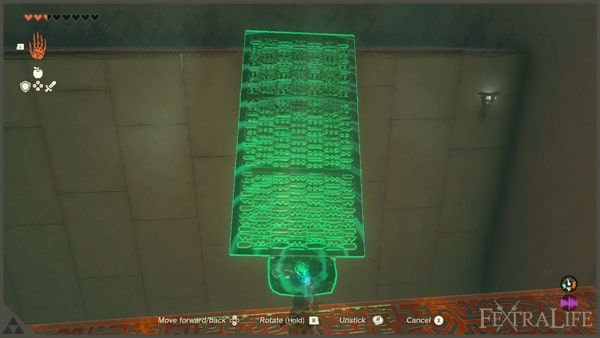
Thử thách 3: ở khu kế, dùng chiếc thang vừa tạo để tới rương chứa 5 Mũi Tên. Để ý máy phóng kích hoạt bằng công tắc. Kích hoạt một Đá Bay, gắn quả cầu sắt lên đó, đặt gần máy phóng rồi nhảy lên. Bắn công tắc để máy phóng bắn bạn sang bên kia. Đặt quả cầu sắt vào đúng lỗ là xong, nhận 1 Ánh Sáng Chúc Phúc.
Xem ảnh (1)
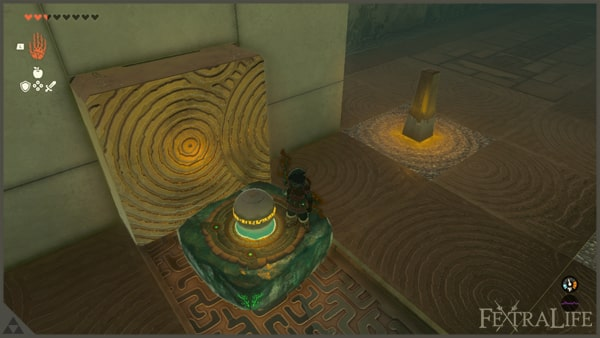
Find Jiahto in Toto Lake (Tìm Jiahto ở Toto Lake)
Xem ảnh (1)
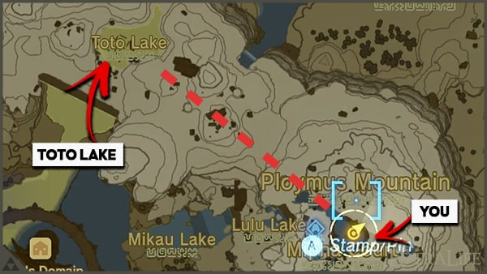
Hồ không xa đây, xem bản đồ là thấy. Trên đường nhớ nhặt thật nhiều Quả Sóng Nước vì lát nữa cần. Bạn sẽ sớm tới Toto Lake; Jiahto đang ở trong một hang, nghiên cứu bức bích họa cổ. Nói chuyện với ông ta để mở nhiệm vụ chính The Broken Slate.
Xem ảnh (1)
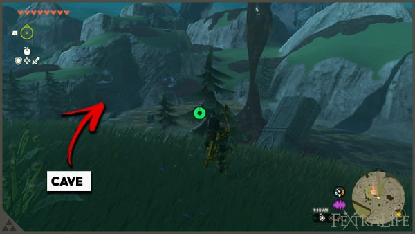
Nhiệm vụ này dễ: tìm mảnh bia đá còn thiếu. Nó nằm gần cửa hang và bị bùn phủ — dùng 1 Quả Sóng Nước rửa sạch. Dùng Siêu Tay gắn mảnh đá vào bức bích họa là xong nhiệm vụ, đồng thời mở nhiệm vụ chính Clues to the Sky.
Xem ảnh (3)
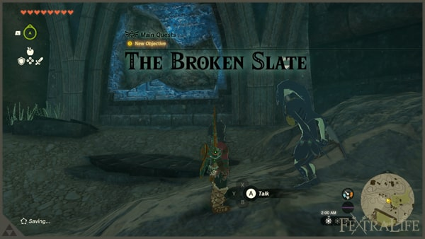
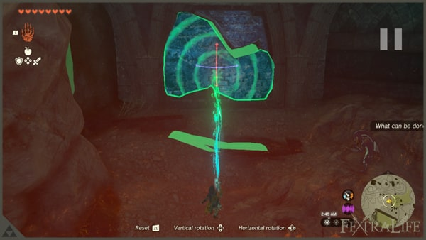
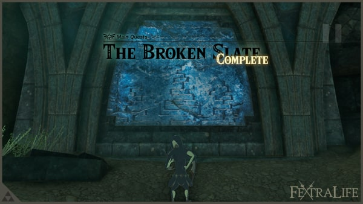
Restoring The Zora Armor (Phục hồi Giáp Zora)
Xem ảnh (1)
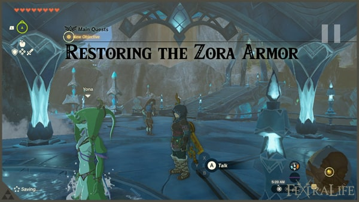
Nhiệm vụ trước mở ra cả đống manh mối, việc cần làm là gom đủ đồ để giải quyết. Mục tiêu kế: Restoring the Zora Armor. Dịch chuyển về Zora's Domain, lên tầng hai của tòa nhà chính, vào phòng y tế gặp Yona. Cô ấy nhờ bạn phục hồi Giáp Zora để dùng trên đường.
Xem ảnh (3)
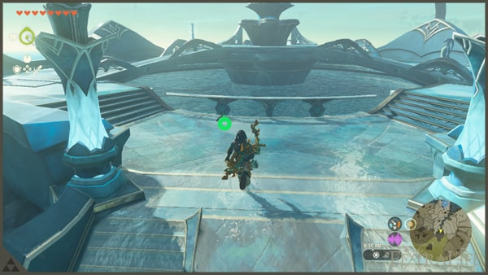
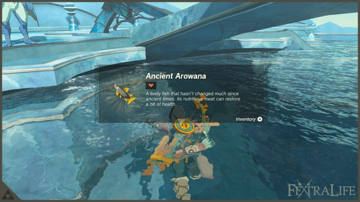
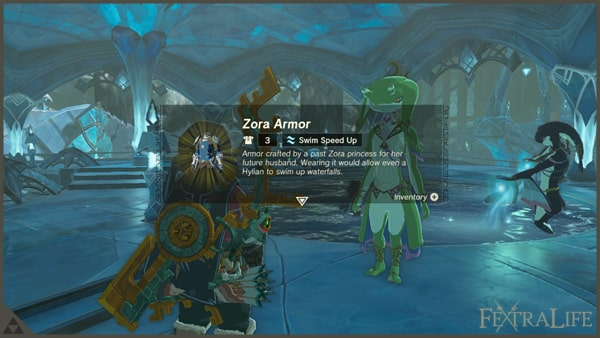
Phục hồi giáp cần ít nhất 1 Ancient Arowana — loài cá dễ tìm. Dịch chuyển tới Đền Thờ Nhỏ Ihen-A để ra Mipha Court, nhìn lên phần cao nhất nơi bùn đang tràn xuống — đó cũng là nguồn nước chính của người Zora. Đến đó, lặn xuống hồ phun nước bắt cá. Mang về cho Yona là xong nhiệm vụ.
Xem ảnh (1)
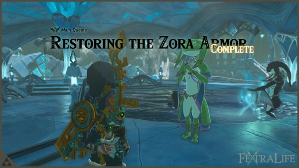
Find King Dorephan (Tìm Vua Dorephan)
Xem ảnh (1)
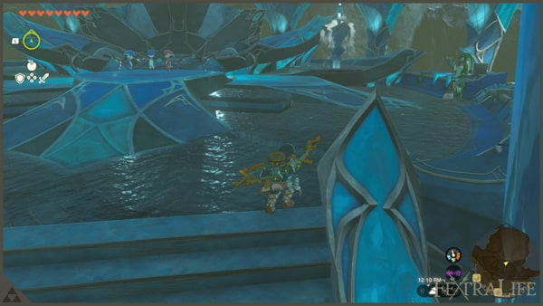
Mục tiêu tiếp theo: tìm Vua Dorephan. Manh mối nằm ở lũ Zora nhỏ trong phòng ngai; phòng ngai ở ngay trên phòng y tế. Bạn phải lén theo chúng thì chúng mới lỡ miệng. Vòng ra sau ngai, đi lén thật khẽ. Xong là biết nhà vua đã lui về Pristine Sanctum.
Xem ảnh (1)
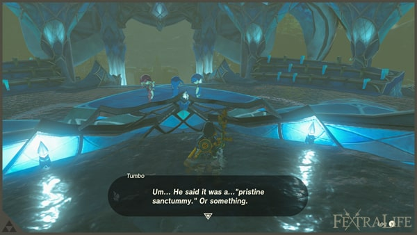
Clear Jiratagumac Shrine (Hoàn thành Đền Thờ Nhỏ Jiratagumac)
Xem ảnh (1)
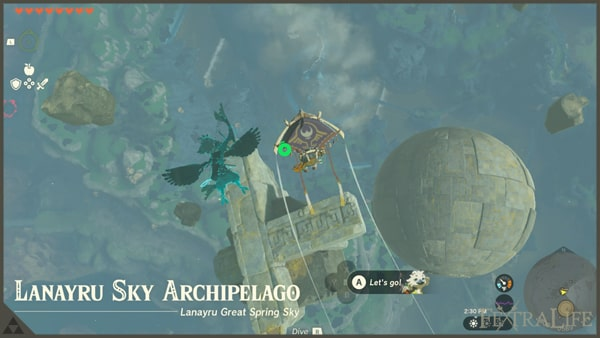
Nhưng trước đó phải rẽ ngang một chút. Dịch chuyển tới Tháp Quan Sát Upland Zorana, phóng lên trời rồi đáp xuống mảnh vụn bay lơ lửng ở đó. Thấy cấu trúc trông như trạm không gian trong phim Star Wars không? Nó xoay tròn, nhưng bạn chui vào được qua khe hở. Vào trong, tìm đền và làm luôn.
Xem ảnh (1)
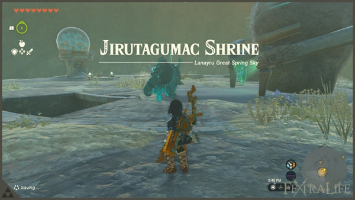
Thử thách 1: dùng Siêu Tay đặt một Cánh (Wing) lên máy bắn đá, hướng về phía có các Xe Zonai tự lăn. Cưỡi Cánh bay sang. Nếu khó quá thì dùng Hồi Tưởng giữ Cánh đứng yên để nhảy lên.
Xem ảnh (1)
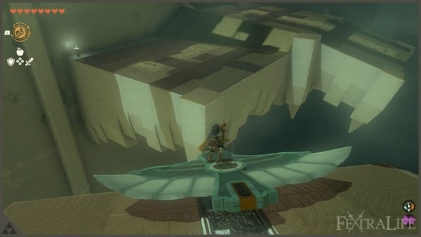
Thử thách 2: sang bên kia, lấy 1 Xe (Cart) gắn vào Cánh, hướng xuống dốc rồi nhảy lên. Xe cộng thêm dốc giúp bạn tăng tốc và vượt qua.
Xem ảnh (1)
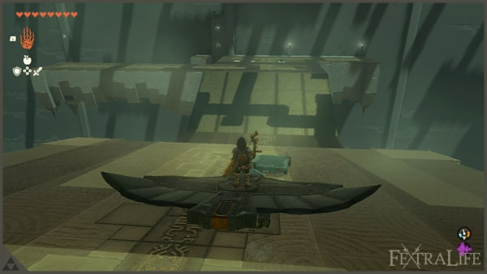
Thử thách 3: gắn 1 Quạt vào phương tiện, hướng ra đường băng, bật Quạt là bay sang bên kia tới bệ thờ. Nhận 1 Ánh Sáng Chúc Phúc. Xong đền thì ra khỏi cấu trúc xoay, tắt Quạt để cần xoay hoạt động; bạn có thể tự xoay cần để khe hở quay đúng hướng mình muốn.
Xem ảnh (1)
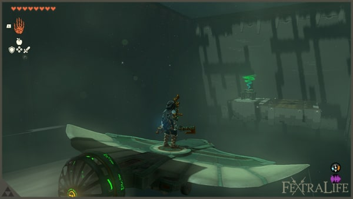
Resume Finding Dorephan (Tìm lại Vua Dorephan)
Xem ảnh (1)
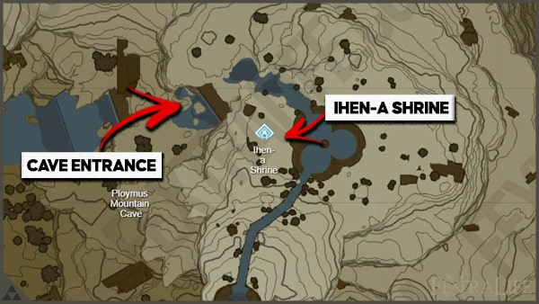
Dịch chuyển tới Đền Thờ Nhỏ Ihen-A rồi lượn tới điểm đánh dấu. Gần thác nước có một cửa hang nhỏ; chui vào sẽ gặp Muzu và Vua Dorephan. Nhà vua đang yếu, bạn kể tình hình điều tra của mình và Sidon; ông sẽ giúp ghép thêm vài mảnh của câu đố lớn. Ông cũng tặng bạn 5 Vảy Vua (King's Scale).
Xem ảnh (2)
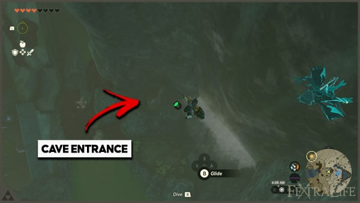
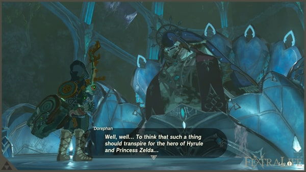
Find The Floating Scales Island (Tìm Đảo Floating Scales)
Xem ảnh (1)
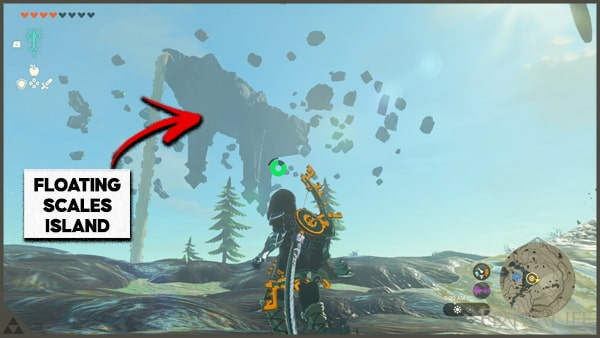
Có vảy của nhà vua rồi, giờ tìm Đảo Floating Scales. Dịch chuyển tới Đền Thờ Nhỏ Ihen-A để về Mipha Court. Hòn đảo cần tìm chính là đảo bay hình con cá gần đó, khó bỏ lỡ. Để lên đảo, hãy nhìn những tảng đá rơi từ các đảo phía trên rồi dùng Hồi Tưởng để chúng bay ngược lên trời, đưa bạn theo.
Xem ảnh (3)
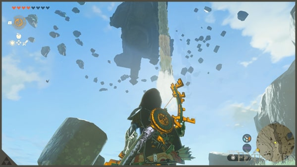
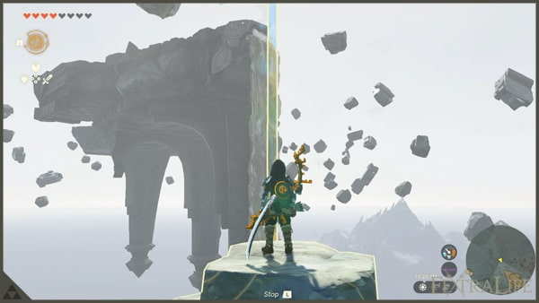
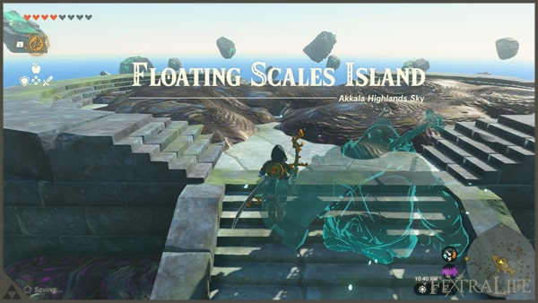
Quay mặt về hướng Tây Nam, bạn thấy một khối đá bay có hình giọt nước. Lắp Cung, ghép một mũi tên với Vảy Vua rồi bắn vào giữa khối đá — một lối đi mới mở ra. Quay lại gặp Sidon ở Mipha Court (dịch chuyển tới Đền Thờ Nhỏ Ihen-A); vừa nói chuyện xong là vào trận boss.
Xem ảnh (3)
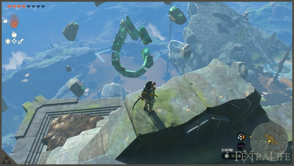
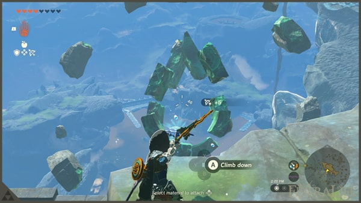
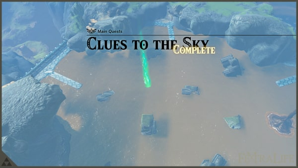
Defeat the Sludge Like in a Boss Fight (Hạ Sludge Like)
Xem ảnh (1)
Muốn hạ boss này dễ thì dựa vào năng lực của Sidon: anh ấy phủ cho bạn lớp khiên nước. Bình thường khiên chỉ để che chắn, nhưng ở trận này bạn dùng nó để rửa bùn trên người boss. Khi đang có khiên nước, bấm nút tấn công thì Link biến lớp khiên thành một đợt sóng xung kích.
Xem ảnh (3)
Đánh trúng Sludge Like để rửa sạch bùn, rồi chờ điểm yếu lộ ra — giống cách xử lý Like thường ngày. Chém vào cái túi đó, nó sẽ choáng và mở ra cho bạn đánh. Sau đó nó phủ lại bùn và lặp lại chiến thuật trên. Xong trận, nhận 1 Royal Claymore.
Xem ảnh (1)
Đi tới East Reservoir Lake, nói chuyện với Sidon để xem đoạn phim. Sidon mở một lối cho bạn vào Ancient Zora Waterworks — khu tiếp theo. Ở khu đầu tiên, để ý một dòng nước bị đá chặn; phá đá để nước tràn ra, dâng đầy cả khu, nhờ đó bạn lên được phần trên.
Xem ảnh (1)
Clear Ancient Zora Waterworks (Khám phá Ancient Zora Waterworks)
Xem ảnh (1)
Mục tiêu chung ở đây rất rõ: dâng mực nước bằng cách thông hết các cống nước để Link tới được bệ thờ giữa khu. Các nguồn nước không khó tìm vì chúng phát sáng. Cống đầu tiên ở ngay gần điểm xuất phát; ra phía Tây là thấy. Dùng Siêu Tay xếp các tấm ván nổi để đứng lên, rồi nhảy chém vào tường đá chặn — nhớ mang vũ khí cận chiến loại đá.
Xem ảnh (1)
Cống thứ hai ở gần đó, nhưng nguồn nằm khá cao. Bạn có thể ghép 1 Hoa Bom vào mũi tên bắn nổ tường đá, hoặc dùng ván có sẵn xếp thành khối để đứng lên với tới lỗ.
Xem ảnh (1)
Quay 180 độ, dùng Siêu Tay nhấc chiếc rương gần đó lấy 1 Khiên Zora. Nhìn sang phía bên kia sẽ thấy nguồn thứ ba. Để ý hai lỗ thoát nước cạnh lỗ chính: bạn chui vào đó, đi theo hệ thống cống nối với lỗ chính. Dùng cây cầu gãy, chui vào một lỗ thoát nhỏ, đi theo đường cống. Keese và Chuchu sẽ phục kích, không đáng ngại, xử nhanh. Cuối cùng bạn gặp một ngã ba có nước nhỏ giọt từ trên; dùng Xuyên để lên nguồn nước phía trên, phá tường chắn là xong.
Xem ảnh (2)
Một đoạn phim hiện ra: mực nước đã đủ cao để tới bệ thờ. Nếu đang quay mặt về tường chắn vừa phá thì lối ra là chiếc thang bên phải. Đi hết hành lang dài, dùng Siêu Tay xoay công tắc mở cửa chớp. Trước khi ra bệ thờ trung tâm, hãy lượn sang cửa hang gần nhất tính từ cửa chớp vừa mở: ở đó có một Ice Like và một con ếch Bubbul; giết chúng để lấy 1 Ngọc Bubbul nếu bạn muốn sưu tầm.
Xem ảnh (1)
Bơi ra bệ thờ giữa khu, kích hoạt ánh sáng xanh để đi tiếp. Đoạn phim tiếp theo mở đường bằng thác nước — chính là cây cầu nước mà câu đố nhắc tới. Sidon và Link quyết định đi tiếp bằng cách leo thác. Bạn leo được vì đã phục hồi Giáp Zora. Tiến ra thác nước để sang khu kế.
Xem ảnh (1)
Reach The Top of Wellspring Island (Lên đỉnh Wellspring Island)
Chào mừng tới Wellspring Island, nơi trọng lực yếu hơn mặt đất — mỗi cú nhảy đi được rất xa, rất có lợi. Bạn sẽ nhảy nền khá nhiều để lên tới đỉnh. Phương tiện chính ở đây là những bong bóng nổi lơ lửng; cưỡi bong bóng một lúc là Link tới được các điểm khác nhau.
Xem ảnh (1)
Trước khi cưỡi lô bong bóng đầu tiên, để ý chiếc rương phủ bùn bên cạnh, dùng 1 Quả Sóng Nước rửa sạch. Trong rương có 1 Lưỡi Kiếm Soldier II. Tới bệ nơi bong bóng chạy lên tầng cao, cưỡi bong bóng để sang khu tiếp. Mục tiêu là lên đỉnh; để ý chuỗi đảo xếp thành vòng tròn, bạn sẽ nhảy qua từng đảo. Cưỡi bong bóng bay lên, kiên nhẫn, cần thì mở Dù Lượn hoặc dùng luồng gió của Tulin. Nhảy từ bong bóng này sang bong bóng khác cho tới khi sang được khu có 2 Soldier Construct III canh gác.
Xem ảnh (1)
Lời khuyên: lũ Construct này đánh rất đau, lâu rồi mới gặp lại nên dễ bị bất ngờ. Nếu bạn chỉ theo lộ trình này mà không làm thêm Đền Thờ Nhỏ hay nâng cấp giáp, hãy cẩn thận. Ở đây cần kiên nhẫn và canh nhịp. Tận dụng các Hiền Giả hỗ trợ, đừng lao vào liên tục, luôn khóa mục tiêu để phản ứng kịp, và nhớ các kỹ năng cơ bản; dùng Liên Hoàn Kích là ý hay.
Xem ảnh (1)
Không chỉ đánh đau, chúng còn trâu, phải ăn nhiều đòn mới gục. Bạn có đòn lao của Yunobo, khiên nước của Sidon và gió của Tulin — nhớ dùng khi bí, vì lúc giao chiến rất dễ quên. Với chỉ số hiện tại theo lộ trình này thì vẫn làm được. Nếu thấy quá khó, cứ tạm dừng nhiệm vụ, đi làm thêm Đền Thờ Nhỏ trên mặt đất để tăng Bình Máu, có dư địa mà đánh.
Xem ảnh (1)
Xử lý 2 Soldier Construct III rồi đi tiếp. Lưu ý chúng rơi Sừng Soldier Construct III — nguyên liệu ghép rất tốt, cộng lực đánh đáng kể. Qua hồ có vòi nước đang chảy, lên khu trên. Để ý các bệ có đầu cá đang phun thác: đó là các bệ rời, bạn nhảy qua để đi tiếp. Nhớ mặc Giáp Zora, lượn và cưỡi thác để lên cao, đồng thời dùng gió của Tulin để bay xa hơn.
Xem ảnh (1)
Đi theo chuỗi bệ; một trong số đó có rương chứa 3 Đá Bay. Lấy rương rồi nhảy từ bệ này sang bệ khác để tới Đền Thờ Nhỏ tiếp theo.
Xem ảnh (1)
Clear Igoshon Shrine (Hoàn thành Đền Thờ Nhỏ Igoshon)
Đền này dạy lại cơ chế bong bóng bạn vừa gặp ở Wellspring Island. Khá dễ, mục đích chính là mở điểm dịch chuyển cho khu này.
Thử thách 1: bong bóng ở đây bay lên; cứ cưỡi để sang khu tiếp.
Xem ảnh (1)
Thử thách 2: khu sau, bong bóng bay xuống. Dùng Hồi Tưởng để nó bay ngược lên, cưỡi lên rồi nhảy sang bệ kế.
Xem ảnh (1)
Thử thách 3: bong bóng lao lên dốc về phía bệ gần nhất. Cưỡi để sang bệ kế; để ý cách bong bóng lấy đà từ bệ trước. Làm tương tự: di chuyển khối kim loại trong phòng, đặt thanh kim loại dài thành dốc để bong bóng phóng bạn tới bệ thờ. Tới bệ thờ, nhận 1 Ánh Sáng Chúc Phúc.
Xem ảnh (2)
Post Igoshon Shrine (Sau Đền Thờ Nhỏ Igoshon)
Trước khi đi tiếp ở Wellspring Island, vì đã mở điểm dịch chuyển, hãy quay về Lookout Landing đổi 4 Ánh Sáng Chúc Phúc lấy 1 Bình Máu. Chuẩn bị thêm món ăn và vũ khí nếu cần. Xong thì đi tiếp: có sẵn một Cánh, dùng Siêu Tay đặt trước máy phóng, bắn công tắc bằng mũi tên rồi lượn sang bên kia. Qua bậc thang sẽ gặp Captain Construct II — nhắm vào đầu để làm choáng rồi kết liễu. Coi chừng thiết bị phun lửa của nó, đốt rất đau.
Xem ảnh (1)
Cưỡi thác nước gần nhất, lượn sang chuỗi bệ tiếp theo — đây là lô cuối, sắp tới đỉnh. Lấy rương trên một trong các bệ: 1 Old Map. Đi tiếp, bạn gặp một đảo có 2 Soldier Construct II và 1 Soldier Construct III canh gác. Đánh cẩn thận vì khoảng đánh khá hẹp. Xong trận, mở rương lấy 1 Lưỡi Kiếm Construct III. Leo lên cây cột gãy, tới khu có bong bóng bay về phía bạn; dùng Hồi Tưởng để nó đi ngược chiều.
Xem ảnh (3)
Tới đầu bên kia, bạn thấy đảo tiếp theo khá xa và bong bóng không với tới. Câu trả lời nằm ở vật liệu quanh đây: có nhiều tấm đá. Hai tấm đầu ở ngay chỗ bong bóng bị kẹt, hai tấm còn lại ở hồ gần vòi nước. Ghép 4 tấm thành một dốc đá dài để bong bóng bay đúng hướng. Cưỡi bong bóng, vừa tới đảo bên kia thì mở Dù Lượn và dùng gió của Tulin. Ở bên đó, dùng 1 Quả Sóng Nước rửa bùn trên rương và lấy 1 Opal.
Xem ảnh (1)
Để sang bờ bên kia, hãy ghép một chiếc máy bay: gắn Cánh vào Xe, đặt 5 Quạt ở phía sau. Hướng máy bay về phía dốc; mọi bộ phận đều có sẵn quanh đây. Bật máy bay là bạn sang được bờ bên kia mà không gặp trở ngại.
Xem ảnh (1)
Chúc mừng đã lên tới đỉnh Wellspring Island. Thử thách cuối là 1 Captain Construct III canh thác nước; nó bắn laser nên cẩn thận. Cùng các Hiền Giả vây đánh là xong.
Xem ảnh (1)
Clear Water Temple (Hoàn thành Đền Thờ Nước)
Cưỡi thác nước tới cửa Đền Thờ Nước. Sidon và Link sớm phát hiện nguồn bùn. Nước từ các bình khổng lồ trong đền có thể rửa sạch nguồn bùn, nhưng hiện tại dòng nước chưa đủ mạnh. Từ đây mục tiêu chính là làm sạch đền và mở khóa tất cả các bình.
Xem ảnh (1)
Mở đủ 4 vòi nước (Four Faucets) để dòng nước chảy mạnh trở lại, rồi hạ boss Mucktorok. Xong trận, bạn nhận 1 Bình Máu và Lời Thề của Sidon – Hiền Giả Nước.
Xem ảnh (3)
Chẳng bao lâu Lanayru trở lại bình thường, bùn bị rửa trôi hết. Chúc mừng bạn đã hoàn thành nhiệm vụ chính Sidon of the Zora. Quay về Lookout Landing tiếp tế và chuẩn bị cho vùng kế tiếp: Gerudo.
Return to Upland Zorana Skyview Tower (Quay lại Tháp Quan Sát Upland Zorana)
Quay lại Tháp Quan Sát Upland Zorana, phóng lên rồi đáp xuống hình vẽ mặt đất gần đó để tìm Giọt Lệ Rồng. Đoạn Ký Ức cho thấy công chúa Zelda cùng các thủ lĩnh, khi mỗi người nhận một Bí Đá từ Vua Rauru để chiến đấu chống Ma Vương.
Đi tiếp tới Hố Sụt East Akkala Plains; dưới đáy có một con Obsidian Frox canh gác. Đánh hay né đều được, tùy bạn. Rồi tìm tới Rễ Sáng Akinatanis để mở điểm dịch chuyển nhanh.
Điểm đến kế là Rễ Sáng Ui-Ihcoj gần đó; sau đó tới cấu trúc giống đền thờ phía sau. Dùng Xuyên lên trên, bạn sẽ đánh một Yiga Blademaster. Tìm Konba trong một căn nhà — ông ta đưa bạn bộ giáp Yiga. Mở rương trong cùng căn nhà để lấy Travel Medallion Prototype.
Return to Lookout Landing (Quay về Lookout Landing rồi xuống Vực Sâu)
Dịch chuyển về Tháp Quan Sát Lookout Landing; Purah lại dặn bạn tiếp tục điều tra các vùng khác. Xuống Vực Sâu tìm Rễ Sáng Koradat, rồi Rễ Sáng Kawatik.
Đi tới khu Mỏ Trung Tâm Bỏ Hoang (Great Abandoned Central Mine), nói chuyện với nhà nghiên cứu và Steward Construct để nhận năng lực Tự Động Xây (Autobuild). Mở thêm hai Rễ Sáng gần đó là Iayusus và Nihcayam.
Xong việc thì Master Kohga cùng đám tay sai xuất hiện. Đánh bại thủ lĩnh Yiga; hắn sẽ bỏ chạy. Mở rương nhận Huge Crystallized Charge, rồi nhận Schema Stone từ Steward Construct.
Sau đó quay về Lookout Landing nói chuyện với Josha.
Thyphlo Ruins Skyview Tower (Tháp Quan Sát Thyphlo Ruins)
Đi tới Tháp Quan Sát Thyphlo Ruins. Tháp đang bị một bệ đá chắn lối; ghép một Quạt Zonai để đẩy nó ra. Kích hoạt tháp rồi lượn tới hình vẽ mặt đất gần nhất, tìm Giọt Lệ Rồng. Ký Ức này cho thấy khoảnh khắc công chúa Zelda chọn số phận của mình và quyết tâm cứu vương quốc Hyrule.
Mẹo: luôn mang theo Quả Sóng Nước vì cả vùng dùng để rửa bùn; mặc Giáp Zora trước khi leo thác; ở Wellspring Island nhớ dùng Hồi Tưởng cho bong bóng bay ngược chiều; đổi Ánh Sáng Chúc Phúc lấy Bình Máu trước khi vào Đền Thờ Nước.
Vùng Lanayru — chi tiết hoàn tất, phủ đủ 36 bước của lộ trình.